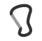
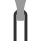
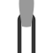
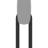
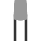
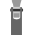
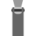
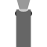

Shape
| Shape | Description | Comments | |
|---|---|---|---|
| oval | classic symmetrical oval | A classic shape easily formed with simple tooling. Still in use because the symmetrical shape reduces shifting under load. | |
| D | trapezoid D shape with parallel gate and spine | As with the Oval, the gate and spine are parallel, but D shaped carabiners shift the load away from the gate, permitting lighter carabiners for the same strength rating (or stronger carabiners for the same weight). | |
| asymmetric D | a D-shaped carabiner with one end larger than the other | By shrinking the hinge end the D shape is lightened further with little impact on usability. Conversely, for the same weight the gate opening is larger than a symmetrical D shaped carabiner. | |
| swept spine | spine forms a bend arcing away from the gate side | Swept shape is easier to grip than a straight spine, but can reduce gate opening or increase weight depending on design. Omega Pacific JC Light | |
| bent spine | asymmetric D with a single bend in the spine | Creates a larger gate opening and basket than an asymmetric D. Can be easier to clip one-handed when used on a rock climbing quickdraw or similar. Example: Black Diamond Dynotron | |
 | S-spine | two reversing bends in the spine, forming an S-shape | Similar features to a basic bent spine, but the s shape can be easier to hold, especially for large carabiners such as the: Petzl Vertigo. |
| HMS | trianglar, or slightly swept-spine asymmetric D shaped carabiner with large enough basket for a Munter hitch | A large basket permits easy use with a Munter Hitch (Halbmastwurfsicherung in German) Petzl Attache | |
|  | hourglass | 8-shaped carabiner with narrow waist | An evolution of the HMS carabiner with a restricted small end of the carabiner to encourage proper loading of the carabiner. Often present with an additional anti-crossloading feature. Example: Black Diamond Gridlock |
 | other | - | for everything else |
Profile
Cross-sectional profile of the carabiner.
Some carabiners have a blend of profiles, with differnt cross-sections along the basket or spine. In general, I try to categorize carabiners using the profile along the rope running surface or the profile which best represents the manfacturing method.
Some styles can be murky to tease apart, especially if the profile is not consistant along the entire carabiner body:
The Omega Pacific Jake typifies the T-Beam profile, and the BD Quicksilver2 uses a similar profile with softened edges. I have classified the Petzl Spirit v1 as a hollow-trapezoid shape, but evenly splits the difference between T-Beam and Trap.
The Petzl Spirit v2 clearly uses an I-Beam (H-Beam) profile, but the BD Vaporlock softens those edges significantly, almost a hollow-trapezoid shape. And I've classified the BD Dynotron v1 as an I-Beam, but it is essentailly a trapezoid shape with a minor groove.
| Style | Description | |
|---|---|---|
| round | formed from round rod stock | |
| flat | formed from round rod stock, flattened into an oval cross-section | |
| trapezoid | similar to flat forming, but tapers towards the outside/spine of the carabiner | |
| hollow-trap | trapezoid with the concave sides | |
 | T-beam | wide at the interior of the carabiner with a narrow spine |
| I-Beam | thicker at either end of the profile, usually not symmetric - some carabiners have both an I-beam and hollow-trapezoid profile | |
| Webbed I-Beam | Like an I-beam, but has distinct areas where the center of the I is thinner and thicker. | |
| other | - |
Rivet Style
Most gates are attached to the carabiner body with some sort of rivet or pin. The ends of the wire in a wiregate are finished in a similar manner.
A rivet is a pin with flared ends, that flaring can take different shapes which affects how the carabiner handles. One end is usually pre-formed, and the other end formed once the carabiner has assembled. Most auto-locking carabiners use a (pre-formed) stud on one end of the hinge rivet to index the locking sleeve. In this case, this term describes the finished end.
Admittedly, this term is somewhat subjective as styles represent a blend of both manufacturing methods and design choices, and some style are very similar. I consider an edge sharp if I can scrape off part of my fingernail against the rivet edge. In my experience, edges this sharp will pick and catch on rope fibers. This does get murky on well-used carabiners with worn rivet edges.
| Style | Description | |
|---|---|---|
| domed | smooth-edged domed shaped rivet | |
| flat spun | sharp-edged rivet spun almost flush with the gate | |
| flat-dimpled | sharped-edged with central dimple | |
| flush | riveted head (not a pin) driven flush or slightly recessed - no sharp edges as found in flat-spun rivets. May be difficult to determine with worn carabiners. | |
 | pin: recessed | pin driven beyond flush of the gate, no head |
| pin: proud | pin left proud of the gate surface | |
| domed + flat spun | combination of styles |
Nose Guard
In conjunction with the gate spring tension, a guard helps protect an unlocked carabiner gate from opening if dragged (flat) across a (rock) surface.
This feature may sometimes be referred to as a hooded nose, especially with wiregate carabiners.
| Style | Description | |
|---|---|---|
|  | none | no guarding, wire fully exposed |
|  | minimal | minimal guarding at the very top of the wire's bend but does not extend the full length of the nose |
|  | semi | guarding which extends the full length of the nose, but not beyond the width of the gate wire |
|  | full | guarding which extends the full length of the nose AND the width of the gate wire |
Gate Shroud
If loaded along the minor axis (crossloaded), the rear of the gate can rapidly shred a rope.
Older carabiners tended to have a large square cut-out, which clears debris and ice relatively easily, but may damage the rope under a heavy crossload. More modern designs have a smoother surface on the rear of the gate to prevent damage.
| Style | Description | |
|---|---|---|
|  | none | gate cutout fully exposes the notch and nose of the carabiner. Bottom of hte cut may be square (older style) or rounded. |
|  | semi | the rear cutout ont the gate does not extend below the nose of the carabiner, but does leave the pin/notch exposed slightly |
|  | full | a fully guarded, smooth rear gate surface extending beyond the pin (if present). May have slight relief cut at the top, which provides a bit more gate clearance when fully open |
| relieved | a relief hole in the rear of the gate aid clearing of ice and debris so the gate will seat properly or be less likely to freeze closed |